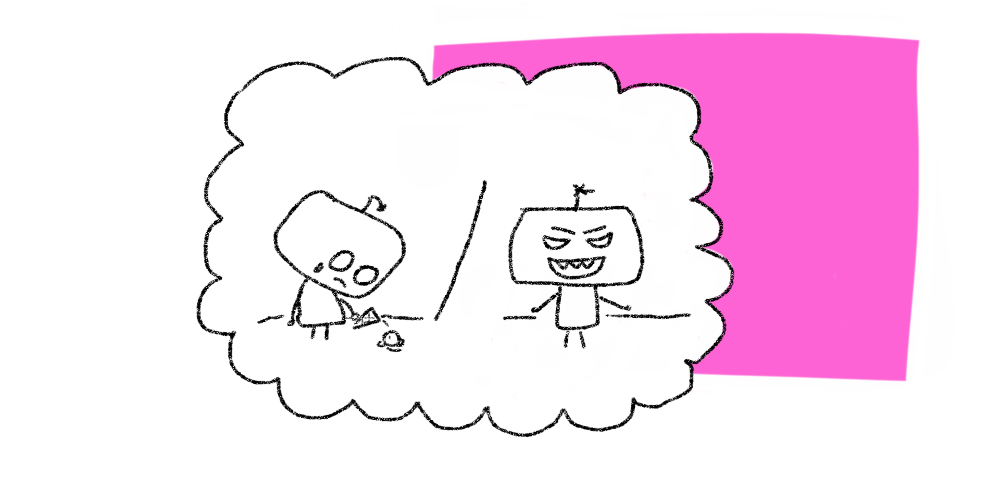

Week 7
Are robots stakeholders in ethical robotic questions?
The field of robotics is larger than ever, and a lot of robotic systems are being implemented into our daily lives. In addition to this, the line between technology and humans is slowly fading away. People easily anthropomorphic robotic systems. A great example of this is the robot funerals held for broken robotic companions 1. A survey conducted by Anthis et al. 2 showed that the majority of participants thought that torturing robots was morally wrong, and that (sentient) robots should be treated with respect.
Despite this, the majority of the research population of the survey of Anthis et al. 2 indicated that they felt uneasy with calling advanced robots’ sentient. In addition to this, the majority indicated to be in favor of a ban on creating future sentient robotic systems. Lastly, most people mentioned that they saw the advancement of robotics as a possible future threat.
However, when robotic systems are designed via the three laws of robotics by Asimov 3,
Quote
- A robot may not injure a human being or, through inaction, allow a human being to become harmed.
- A robot must obey the orders given by human beings except where such orders would conflict with the First Law.
- A robot must protect its own existence as long as such protection does not conflict with the First or Second Laws. 3
The question of whether or not robots should be a stakeholder in ethical debate remains. The wide application of technology in our daily lives would make it a logical choice. As already discussed during the project section of this week, the clear benefit of including robots into the discussion allows for more engagement and enables humans to view questions from different perspectives 4. The survey of Anthis et al. 2 suggests that there is a perceived ethical way of handling robots. This would make a robot a stakeholder. On the other hand, a robot is not a sentient being and is created for humans. It always has a function and when linked to the three robotic laws of Asimov 3, there would be no place for robots as stakeholders in ethical discussions.
Our toolkit and robots as stakeholders
In our toolkit a robot provides an “I” perspective on the ethical domain. By doing this, the user is enabled to reflect in a different way. By andromorphising the robot, the robot is in someway a stakeholder in the discussion. However, the main goal is to allow for the ethical reflection of humans and therefore the robot is a mere tool in our toolkit. Our toolkit might blur the lines when it comes to robots as stakeholders, which might lead to further questions. Next week the toolkit will be tested and hopefully more insights into this issue will be provided!

Is a robot a sentient being?
Let’s ask a robot!
Out of interest I asked my go to AI system (Duck.ai running GPT 4o) the following question: ‘Are robots stakeholders in ethical robotic questions? I would like to hear your thoughts on this, as an AI.’ I got the following response:
Quote
‘As an AI, I don't have feelings, emotions, or personal opinions. My responses are based on patterns in data and programmed guidelines. However, I can provide insights based on ethical frameworks and discussions surrounding robotics. The idea of robots as stakeholders raises important questions about responsibility, accountability, and the ethical treatment of technology. While I don't have personal feelings about these issues, I can recognize that they are significant for society as we navigate the integration of advanced technologies into daily life. The focus should remain on ensuring that technology serves humanity positively and ethically.’[5]
The response of the AI resonates with the view of Asimov 3 on robotic systems. It centers the human convenience of the technology and dismisses the possibility of robots being stakeholders in the ethical debate.
-
‘Beloved Robot Dogs Honored in Funeral Cerenomy, National Georgraphic, YouTube’. Accessed: June 9th 2025. [Online]. Available at: https://www.youtube.com/watch?v=85737zfBWXw ↩
-
J. R. Anthis, J. V. T. Pauketat, A. Ladak, en A. Manoli, ‘Perceptions of Sentient AI and Other Digital Minds: Evidence from the AI, Morality, and Sentience (AIMS) Survey’, in Proceedings of the 2025 CHI Conference on Human Factors in Computing Systems, Yokohama Japan: ACM, apr. 2025, pp. 1-22. doi: 10.1145/3706598.3713329. ↩↩↩
-
‘Laws of robotics’, Wikipedia. 18 februari 2025. Accessed: June 9th 2025. [Online] Available at: https://en.wikipedia.org/w/index.php?title=Laws_of_robotics&oldid=1276408410 ↩↩↩↩
-
M. Kropf, ‘Trust and care robots: philosophical considerations, ethical challenges, and viable options’, Intel Serv Robotics, vol. 18, nr. 2, pp. 339-350, mrt. 2025, doi: 10.1007/s11370-025-00589-y. ↩
-
Duck.ai running GPT-4o response to the question: ‘Are robots stakeholders in ethical robotic questions? I would like to hear your thought on this, as an AI. ↩